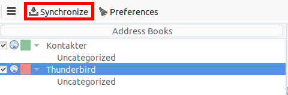

與 Thunderbird 同步
Thunderbird 是一個功能豐富且成熟的郵件客戶端，可以轉變為完整的個人資料管理器（PIM）。自 102 版本以來，它支持通過 CardDAV 進行地址簿同步，並自動發現伺服器上的日曆和地址簿。
推薦方法
自 Thunderbird 102 開始，原生支持 CardDAV 和 CalDAV 協議。
聯絡人
在地址簿視圖中，點擊 新地址簿 附近的下拉箭頭，然後選擇 添加 CardDAV 地址簿。
在下一個窗口中，輸入您的 用戶名 和 **位置**（伺服器 URL）。
下一個窗口將要求您輸入此帳戶的用戶名和密碼。
前一個窗口將刷新並詢問您希望同步哪些地址簿。
選擇後點擊 繼續。
如果您稍後想添加新的地址簿，可以重做所有這些步驟，系統將僅建議尚未同步的地址簿。
Note
如果您的帳戶使用雙重身份驗證，您需要一個專用的應用密碼來登錄，而不是常規密碼。
日曆
在 Thunderbird 中轉到日曆視圖，然後在左側面板底部選擇 新日曆... 按鈕。
選擇 在網絡上：

輸入您的 用戶名 和 位置**（伺服器 URL），然後點擊 **查找日曆。
選擇您想要添加的日曆，然後點擊 訂閱
同樣，如果您稍後想添加更多日曆，只需重做該程序即可。
替代方案：使用 CardBook 附加元件（僅限聯絡人）
CardBook 是 Thunderbird 地址簿的進階替代方案，支持 CardDAV。
點擊 Thunderbird 右上角的 CardBook 圖標：

在 CardBook 中：
轉到地址簿 > 新建地址簿 遠程 > 下一步
選擇 CardDAV，填寫您的 Nextcloud 伺服器地址、用戶名和密碼

點擊「驗證」，然後點擊「下一步」，選擇地址簿的名稱，再次點擊「下一步」：

完成後，CardBook 將同步您的地址簿。您可以隨時通過點擊 CardBook 左上角的「同步」手動觸發同步：
